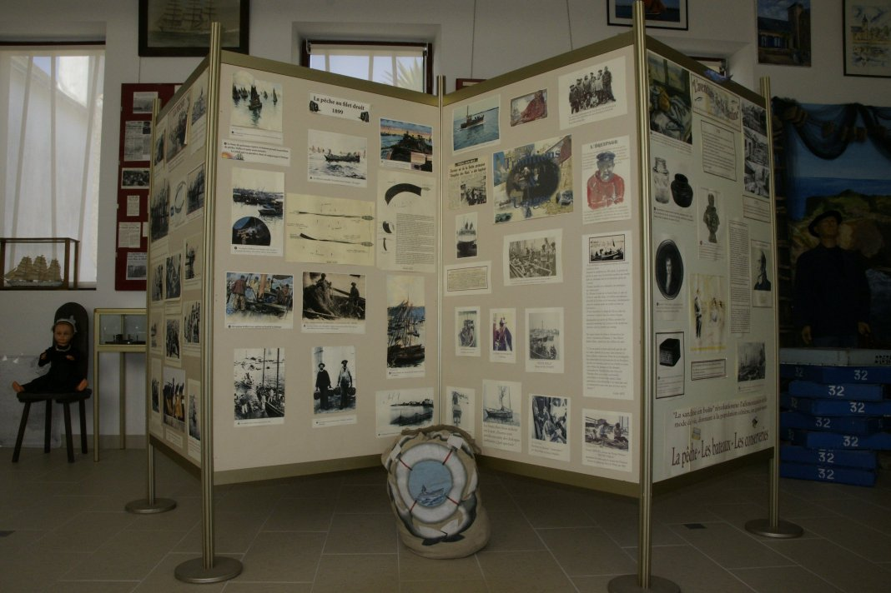
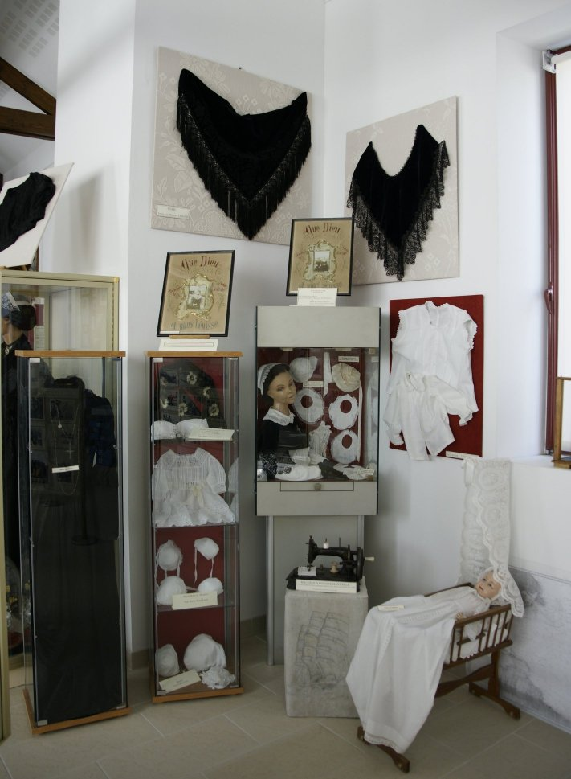
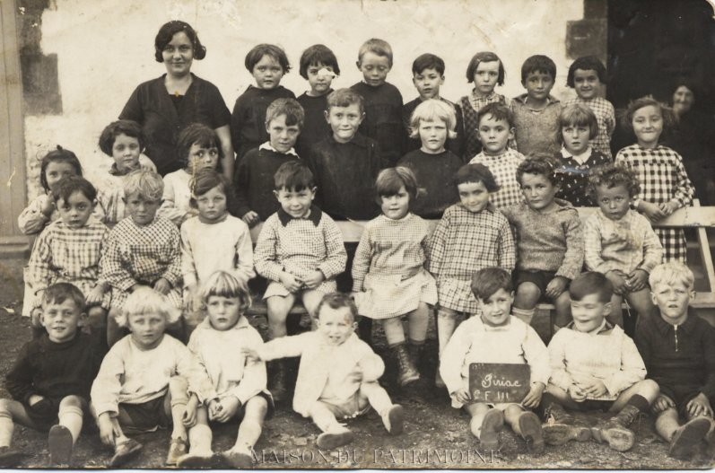

Expositions permanentes
-
Pendant 150 ans elle fut au cœur de l´activité de Piriac, de Mai à Septembre chaque année elle attirait toutes les attentions, pas un jour ne se passait sur le port sans qu´elle ne soit l´objet de tous les regards, la vie était réglée en fonction de l´heure de son arrivée, du nombre de tonnes qui seraient débarquées ....
L´aventure de la sardine à Piriac : Venez découvrir cette exposition qui vous fera revivre ces années depuis la pêche à la voile, jusqu´au règne des bateaux à moteurs, les périodes fastes, les périodes noires, le travail saisonnier, tout cela pour servir sur les tables des plus grands restaurants « une sardine de 3 ans, aussi fin et goûté que du foie gras ! ».

-
Né à Piriac à la fin du XIXe siècle, il parcourut les mers du globe comme commandant sur des trois mâts assurant transport de marchandises et passagers. Le Commandant Lebeau, une vie consacrée à la mer, terminée comme maire de Piriac, en 1961. A voir notamment les instruments de navigation aimablement prêtés par la famille.
-
Une remarquable collection de 1200 cartes postales de la première moitié du XXe siècle.
-
Les costumes et coiffes des années 1900.
-
Quelques pièces, exceptionnelles du trésor de l´église de St Pierre-ès-liens.
-
La présence protestante en presqu´île guérandaise.
-
Et bien sûr, venez retrouver vos ancêtres qui sont passés par les écoles de Piriac, à travers l´exposition sur les petits écoliers et toutes les photos les rassemblant.